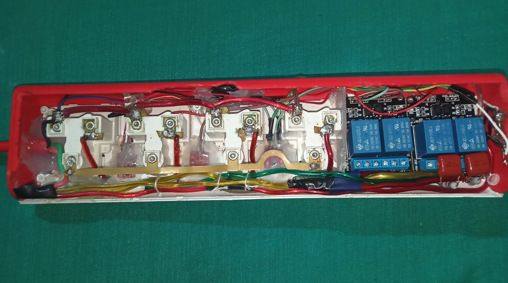
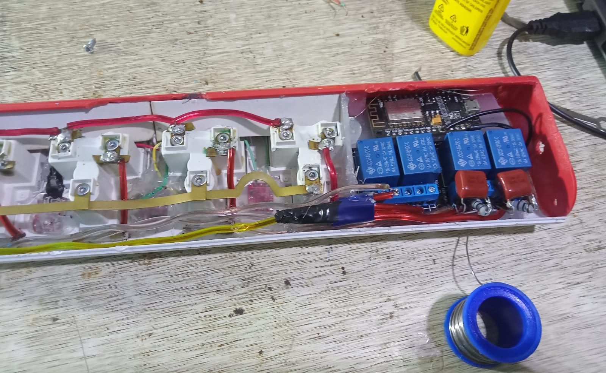

Smart WiFi Power Extension Board
Introduction
A custom IoT-enabled smart power strip engineered to bring wireless control, automation, and individual socket switching to ordinary home appliances over local WiFi.
Technical Details & Approach
Why I Built This:
Commercial smart plugs available in the market are either overpriced, bulky, or rely on shady cloud servers with terrible latency and privacy issues. I wanted an integrated multi-socket power extension board where every single outlet could be toggled independently via a local web interface or smartphone without relying on external cloud servers or an active internet connection.
Hardware Architecture & High-Voltage Safety:
I took a standard multi-outlet extension chassis and gutted its internals to retrofit microcontroller control. The system uses an ESP microcontroller connected to an opto-isolated relay board to switch high-voltage 220V AC lines safely. The high-voltage AC traces were physically isolated from low-voltage DC logic with routed air gaps to prevent arcing and protect the microcontroller.
Power for the ESP microcontroller and relays is derived directly from the 220V AC mains using a compact step-down power supply module (Hi-Link HLK-PM01), eliminating the need for an external wall adapter.

Figure: Internal Relay Wiring, AC Mains Routing & Controller Isolation.
Firmware & Local Network Control:
The microcontroller hosts an asynchronous web server directly on your local WiFi network, serving a clean, responsive mobile control UI with instant tactile feedback and state persistence across power outages.
Components List
- Controller: ESP8266 / NodeMCU Wi-Fi Microcontroller
- Switching: Multi-Channel Opto-Isolated 5V Relay Module (10A 250V AC)
- Power Supply: Hi-Link HLK-PM01 AC-to-DC Step-Down Module (220V AC to 5V DC)
- Mains Hardware: Heavy-duty Copper Bus Strips & Multi-Socket 3-Pin Outlets
- Safety & Indicators: Status Indicator LEDs, Thermal Fuse & Manual Override Tactile Buttons
Note: Demo video will be uploaded on YouTube and linked here soon.
References & Links
- › Custom Firmware Repository & Embedded Web Server Code
- › Mains Electrical Isolation Guidelines & Relay Circuit Schematic